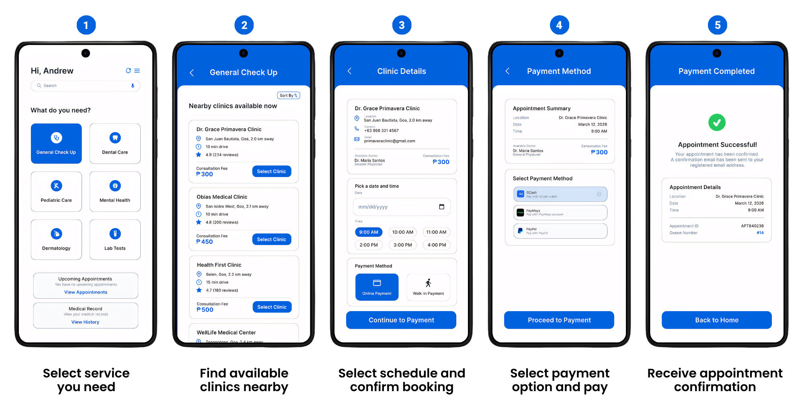

What We Learned from Testing
The usability testing helped identify both the strengths and limitations of the CareSync prototype. While most participants were able to complete tasks successfully, the results also showed areas where usability, clarity, and responsiveness can still be improved.
90%
Task Completion Rate
57.25
Average SUS Score
4.15
Highest SUS Score
20
Participants Evaluated
Observations During Testing
Additional observations gathered during usability testing provided deeper insights into user behavior, interaction patterns, and areas that may improve the overall CareSync experience.
High User Adaptability
Most users were able to adapt quickly to the system even without prior training or guidance.
Time Variation in Tasks
Completion time varied significantly, showing differences in user familiarity and confidence.
Neutral User Responses
any responses leaned toward neutral ratings, indicating uncertainty in overall user experience.
Potential for Improvement
Despite a marginal SUS score, users showed positive indicators that usability can still be improved with refinement.
Varied Task Completion Time
Users completed tasks at different speeds depending on familiarity.
Need for Clear Guidance
Some users needed additional instructions to complete tasks smoothly.
Interface Flow
These screenshots show the main interface flow of the CareSync prototype used during usability testing.

Prototype Video
This video presents the problem encountered in clinic appointment systems, where patients often experience difficulty in booking, long waiting times, and lack of organized scheduling. To address this issue, the CareSync Prototype was developed as the solution. It demonstrates a step-by-step process on how users can book an appointment through the system, from selecting a clinic, choosing available schedules, filling out required information, and confirming the appointment successfully.
Prototype Poster
This poster summarizes the CareSync study, including its overall overview, identified problem, prototype design, respondents, findings/results, and recommendations. It presents a concise visual summary of the research and prototype development process, highlighting the key components and outcomes of the study in an organized and easy-to-understand format.